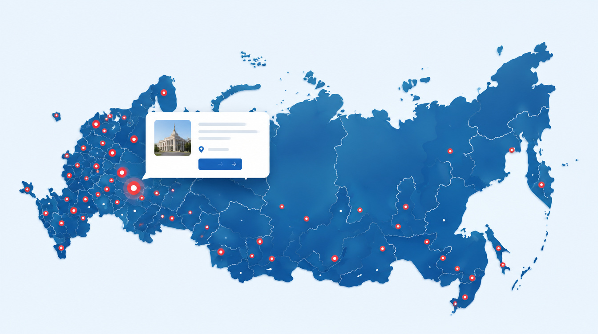

Ульяновская область
Региональная еврейская национально-культурная автономия
● УльяновскЕврейские общины, проекты и инициативы, объединённые одной федеральной организацией.
НАЙТИ СВОЙ РЕГИОН →
Региональная еврейская национально-культурная автономия
● Ульяновск